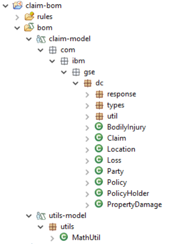
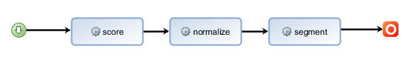
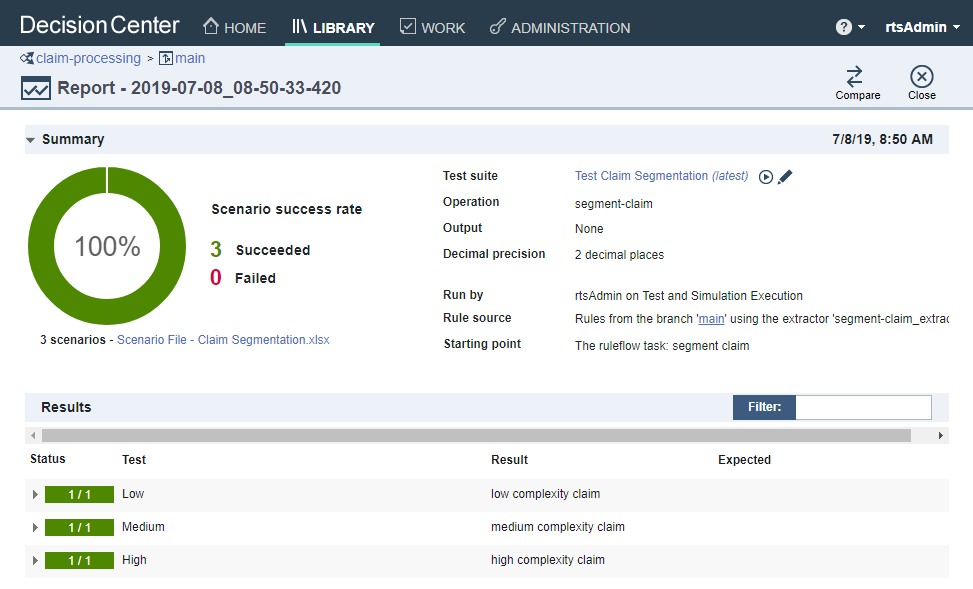

Decisions development
Business Object Model
The BOM is composed of two BOM entries, shown on the figure below The first one, claim-model, is built bottom-up from the Java object model. The second, util-model, holds purely virtual BOM classes that provides utilities to the decision service rules.

The domains for the different attributes of the object model are defined using Excel-based dynamic domains. The domains.xls spreadsheet under the resources folder of the BOM defines the different domains.
The domains are then associated with virtual classes defined under the types folder of claim-model. Finally, for each attribute which value is backed a domain, we create a corresponding virtual attribute which type is the domain class. We remove any verbalization from the attribute that maps to the Java model, and instead verbalize the virtual attribute.
We add the suffix Virtual to the original attribute name as the naming convention for the virtual attribute. For example, in the figure below, we create the descriptionVirtual attribute corresponding to the description attributes that is derived from the Java model.

Sample rule artifacts
We show here a few rules from the segment-claim decision operation for illustration purpose. The rule flow for this operation is a simple sequence of 3 tasks.

The first one computes a complexity score for different aspects of the accident: damages, injuries and others. The second one is aggregating the different component scores and normalizes them on a single scale. The third task derives a categorical complexity (low, medium, high) from the normalized score.
Below are 2 examples of rules, respectively contributing to the damages and injuries component:
single vehicle damage rule definition

fatal injury rule definition

Deployment configuration
The claim-processing deployment configuration is defined to encapsulate the 3 decision operations segment-claim, assess-fraud and review-escalation.

Running this deployment configuration generates and deploys the claim_processing RuleApp, which encapsulates 3 rulesets, exposed through the following decision end-points:
http://{host}:{port}/DecisionService/rest/v1/claim_processing/1.0/segment_claim/1.0http://{host}:{port}/DecisionService/rest/v1/claim_processing/1.0/assess_fraud/1.0http://{host}:{port}/DecisionService/rest/v1/claim_processing/1.0/review_escalation/1.0

Connecting ruleset to BAI
To enable an ODM ruleset to send events to the BAI component, the bai.emitter.enabled ruleset property must be set to true. The additional boolean ruleset properties below allow to control the scope of the events that are emitted:
- bai.emitter.input
- bai.emitter.output
- bai.emitter.trace
We have set-up the following properties in the deployment configuration. Once deployed, the ruleset property values can be adjusted in the Rule Execution Server console.

Ruleset testing
Once the claim processing decision service projects are deployed to Decision Center, you can exercise test scenarios on the different decision operations.
Sample test scenarios, in the form of business users friendly Excel spreadsheets, are provided here. To run a test suite, open the claim-processing decision service, and on the Tests tab, click the New Test Suite (+ sig) button, the select the decision operation you want to test, for example segment-claim:

In the file to use of the Scenarios section of the page, select the Scenario File - Claim Segmentation.xlsx file, then click the Save and Run button:

One the test suite run is complete, you will be switched to the Reports tab. You can then click on the newly generated test execution report to inspect the individual test scenarios execution:
